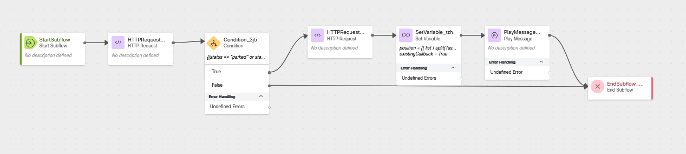
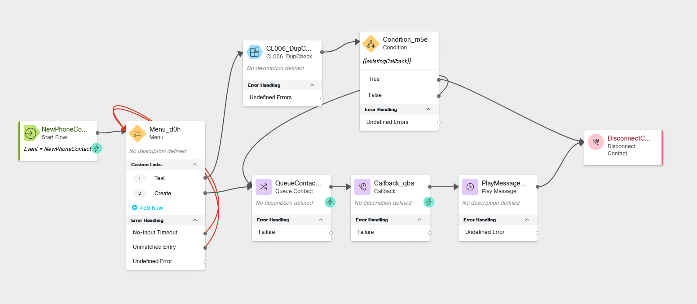

Stopping Duplicate Callback Requests
Story
When you have unexpectedly long wait times it is not uncommon for customers to call back in and create multiple callback requests. In this lab we will identify callers which already have a callback in queue and we will let the caller hear their current position in the queue, so that they know when they can expect to receive a callback.
High Level Explanation
- We will create a Subflow which will make up to two API calls.
- The first call will check to see if there is an existing callback in queue for the callers phone number
- If there is a call in the queue already, the second API call will retrieve a list of calls then we will see where in line the call is and tell the caller.
- We will also create a special Flow just for testing.
Preconfigured Elements
- Connector for calling Webex Contact Center APIs
Build
Create a new Subflow
Name:
CL _DupCheck
Create these Subflow Variables
Name:
TaskID Variable Type:
String Input: false
Output: false
Default Value: empty
Name:
queueID Variable Type:
String Input: false
Output: false
Default Value: empty
Name:
status Variable Type:
String Input: false
Output: false
Default Value: empty
Name:
existingCallback Variable Type:
Boolean Input: False
Output: True
Default Value: False
Name:
list Variable Type:
String Input: false
Output: false
Default Value: empty
Name:
position Variable Type:
Integer Input: false
Output: false
Default Value:
0
Name:
ANI Variable Type:
String Input: true
Output: false
Default Value: empty
Add an HTTP Request node
Select Use Authenticated Endpoint
Connector:
WxCC_API Path:
/search Method:
POST Content Type:
GraphQL Copy this GraphQL query into the request body:
Copy this into the Variables section:query callbackCheck( $from: Long! $to: Long! $filter: TaskFilters $timeComparator: QueryTimeType ) { task(from: $from, to: $to, filter: $filter, timeComparator: $timeComparator) { tasks { id status lastQueue { id } } } }{ "from": "{{now()|epoch (inMillis=true) -86400000 }}", "to": "{{now()|epoch (inMillis=true)}}", "filter": { "and": [ { "origin": { "equals": "{{ANI}}" } }, { "isActive": { "equals": true } }, { "isCallback": { "equals": true } } ] }, "timeComparator": "createdTime" }Parse Settings:
Content Type:
JSON
- Output Variable:
queueID - Path Expression:
$.data.task.tasks[0].lastQueue.id
- Output Variable:
status - Path Expression:
$.data.task.tasks[0].status
- Output Variable:
TaskID - Path Expression:
$.data.task.tasks[0].id
Add a Condition node
Connect the output from the previous HTTP Request node to this node
Expression:
{{status == "parked" or status == "connect"}} We will connect the False node in a future step.
Connect the True node edge to the HTTP Request node created in the next step.
Add an HTTP Request node
Select Use Authenticated Endpoint
Connector:
WxCC_API Path:
/search Method:
POST Content Type:
GraphQL Copy this GraphQL query into the request body:
Copy this into the Variables section:query PIQlist( $from: Long! $to: Long! $timeComparator: QueryTimeType $filter: TaskFilters ) { task(from: $from, to: $to, timeComparator: $timeComparator, filter: $filter) { tasks { id } } }{ "from": "{{now()|epoch (inMillis=true) - 86400000 }}", "to": "{{now()|epoch (inMillis=true)}}", "timeComparator": "createdTime", "filter": { "and": [ { "isActive": { "equals": true } }, { "lastQueue": { "id": { "equals": "{{queueID}}" } } } ] } }Parse Settings:
Content Type:
JSON
- Output Variable:
list - Path Expression:
$.data.task.tasks..id
Add a Set Variable node
Variable:
position Set Variable:
{{ list | split(TaskID) | last | split(",") | length }}
Variable:
existingCallback Set Variable: True
Add a Play message node
Activity Label:
givePIQ Enable Text-To-Speech
Select the Connector: Cisco Cloud Text-to-Speech
Click the Add Text-to-Speech Message button
Delete the Selection for Audio File
Text-to-Speech Message:
<speak> You already have a callback in queue which is the <say-as interpret-as="ordinal"> {{position}} </say-as> call in line. You will receive a callback when it is your turn. Thank you. </speak>
Add an End Subflow node
Connect the output node edge from the previous Play Message node to this End Subflow node
Connect the False node edge from the Condition node to this End Subflow node
Check your flow

Check your flow
{kind=link}

Publish your Subflow
Turn on Validation at the bottom right corner of the flow builder
If there are no Flow Errors, Click Publish
Add a publish note
Add Version Label(s): Live
Click Publish Flow
Create a New Flow for testing
Name:
CL DupTester
Add a new Menu node
Activity Label:
welcomeMenu Enable Text-To-Speech
Select the Connector: Cisco Cloud Text-to-Speech
Click the Add Text-to-Speech Message button
Delete the Selection for Audio File
Text-to-Speech Message:
Press 1 to check for an existing callback. Press 2 to queue a callback to load the test. Select Make Prompt Interruptible
Digit Number: 1 Link Description:
Test Digit Number: 2 Link Description:
Create Connect the No-Input Timeout node edge to the input node edge of this node
Connect the Unmatched Entry node edge to the input node edge of this node
Add a Subflow node for CL
Subflow Label:
Live Map Subflow Input Variables
Click Add New
Current Flow Variable:
NewPhoneContact.ANI Subflow Input Variable:
ANI Map Subflow Output Variables
Click Add New
Subflow Output Variable:
existingCallback Current Flow Variable:
existingCallback
Add a new Condition node
Connect the output node edge from the Subflow node to this Condition node
Expression:
{{existingCallback}}
Add a Disconnect Contact node
Connect the True node edge from the Condition node to this Disconnect Contact node
Add a Queue Contact node
Connect the Create node edge from the Menu node added in the previous step to this node
Select Static Queue
Queue:
yourQueueID
Add a Callback node
Connect the outbound node edge from the Queue Contact node to this Callback node
Callback Dial Number:
NewPhoneContact.ANI Register callback to different location: Off
Static ANI: leave empty
Add a Play Message node
Connect the Output node edge from the Callback node to this Play Message node
Activity Label:
confirmCB Enable Text-To-Speech
Select the Connector: Cisco Cloud Text-to-Speech
Click the Add Text-to-Speech Message button
Delete the Selection for Audio File
Text-to-Speech Message:
You will receive a callback when it is your turn in the queue. Connect the output node edge from this Play Music node to the Disconnect Contact node.
Check your flow

Check your flow
{kind=link}

Publish your Subflow
Turn on Validation at the bottom right corner of the flow builder
If there are no Flow Errors, Click Publish
Add a publish note
Add Version Label(s): Live
Click Publish Flow
Map your flow to your inbound channel
Navigate to Control Hub > Contact Center > Channels
Locate your Inbound Channel (you can use the search):
Select the Routing Flow:
CL >DupTester Select the Version Label: Live
Click Save in the lower right corner of the screen
Testing
- Launch the Agent Desktop and log in using the Desktop option.
- On your Agent Desktop, make sure your status is not set to available
- Using Webex, place a call to your Inbound Channel number
- Choose menu option 1
- You should take the path to receive a callback
- Choose menu option 1
- Using Webex, place another call to your Inbound Channel number
- Choose option 1 again
- You should hear that you have a callback pending, your position in the queue, and the call should disconnect
- Choose option 1 again
- Optional: Using a mobile device or other phone number, place a call to your Inbound Channel number
- Choose menu option 1
- You should take the path to receive a callback
- Choose menu option 1
- Optional: Using a mobile device or other phone number, place another call to your Inbound Channel number
- Choose menu option 1
- You should hear that you have a callback pending, your position in the queue, and the call should disconnect
- Choose menu option 1
- Using Webex, place a call to your Inbound Channel number
If you made to optional call from another number
- Go Available in the agent desktop
- Accept the call on the agent desktop and then answer the call in Webex
- End the call and change your status to not available before wrapping up the call
- Using a mobile device or other phone number, place another call to your Inbound Channel number
- Choose menu option 1
- You should hear that you have a callback pending, your position in the queue, and the call should disconnect
- Go available again, accept the call on the agent desktop, and then answer the call in Webex
- End the call, wrap up the call, and change your status to not available
If you did not make the optional call from another number
1. Go Available in the agent desktop
1. Accept the call on the agent desktop and then answer the call in Webex
2. End the call, wrap up the call, and change your status to not available